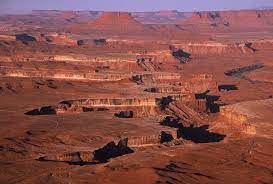
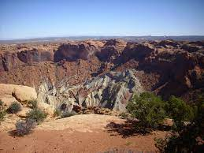
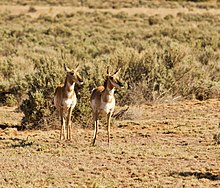

Description
Canyonlands is made up of 4 distinct areas. the total area is 227,598 acres. the movie Thelma & louise was filmed in canyonlands national park.

upheaval dome
The upheaval dome is made of a crater shaped circle in the middle with another folded ring on the outside of it. There are a couple of theories on how the upheaval dome was made one theroy is that it was privously a salt dome that got worn away, another is that it was made by an asteroid or meteroite.

Wildlife
There are several mammals, reptiles, and birds in canyonlands national pard. a few examples of these animals are pronghorn antelope, american black bear, miget faded rattlesnake, common kingsnake, gold eagle and bald eagle.
fees and passes
there are several passes and the fee prices very slightly base on how you go in. some of the passes are annual, military, senior, lifetime senior, and liftime acess pass.
fees and passes